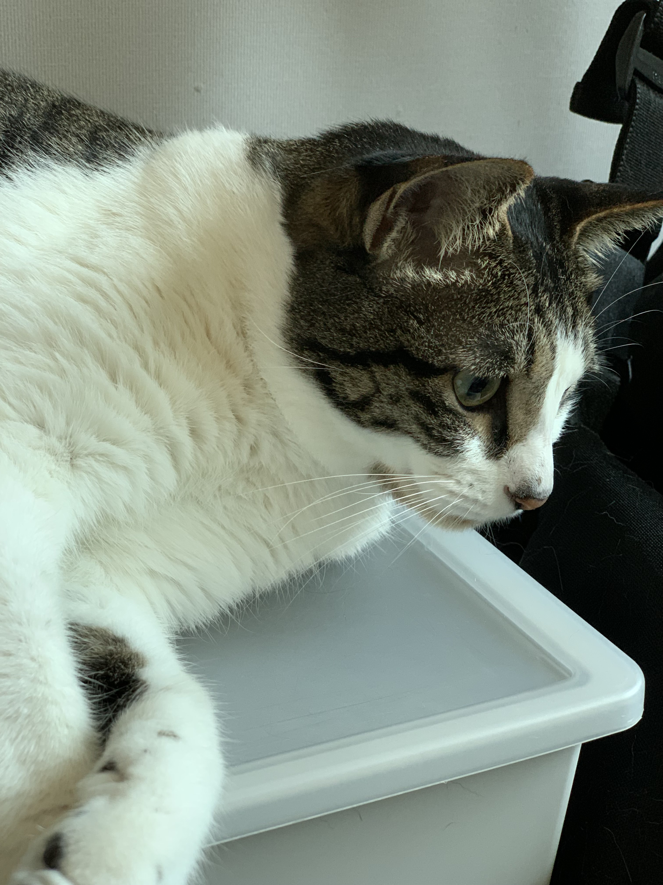
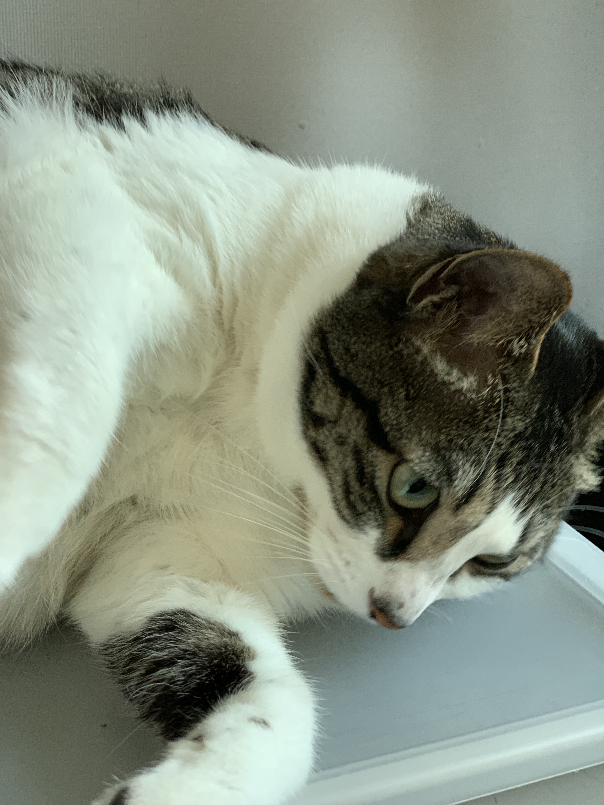
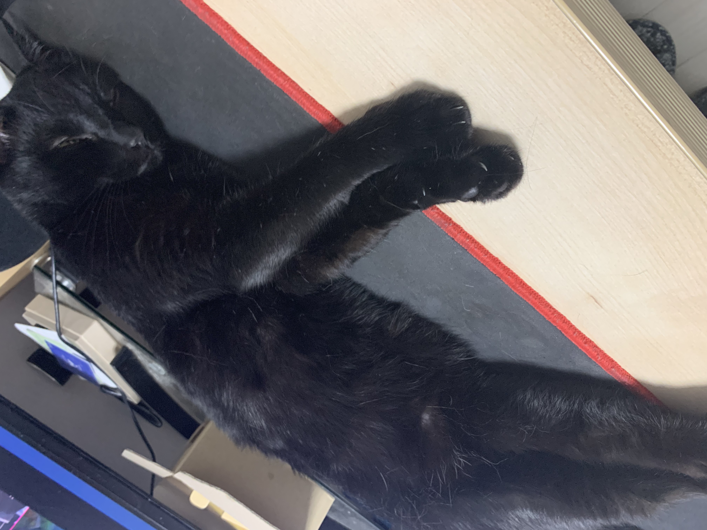
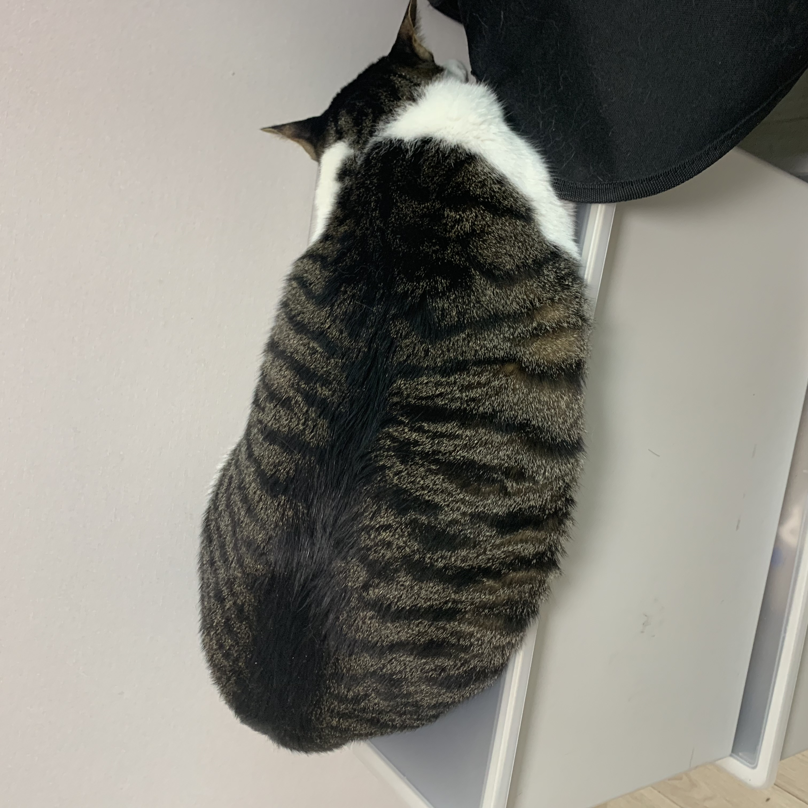
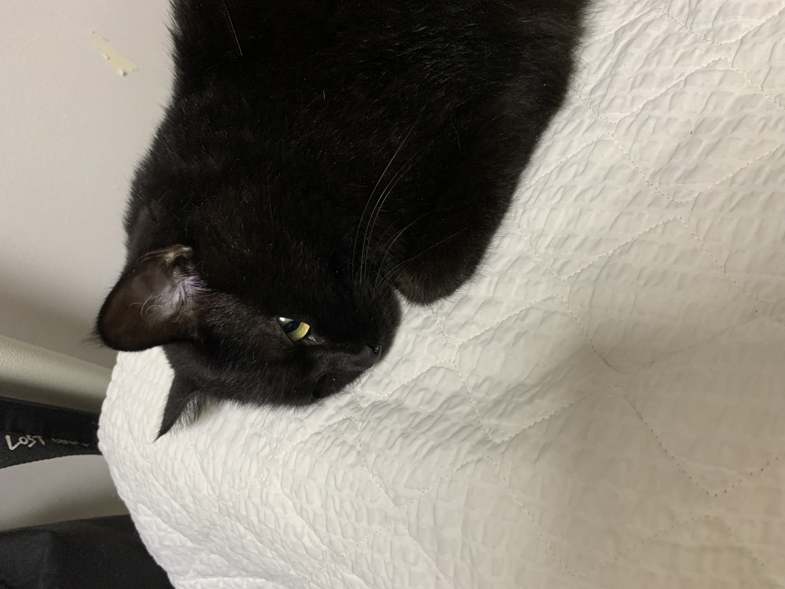
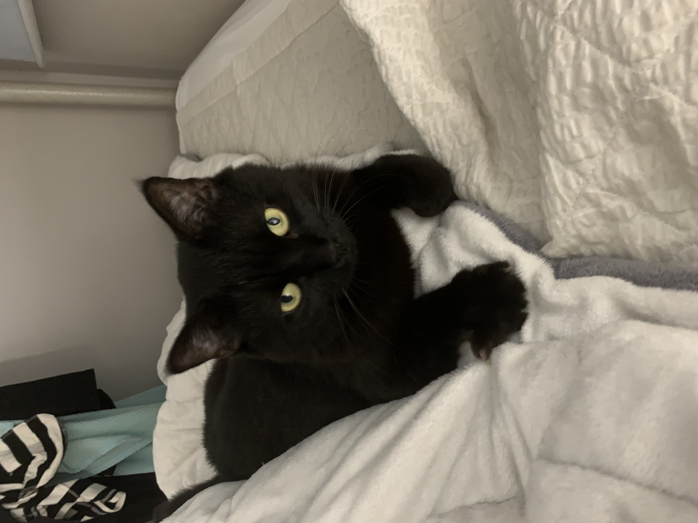
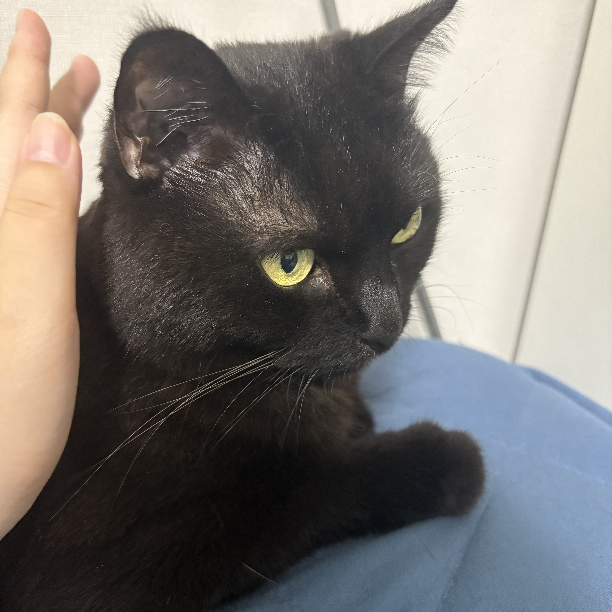
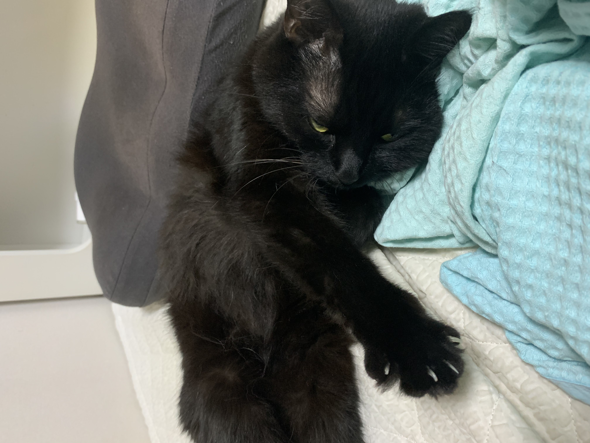
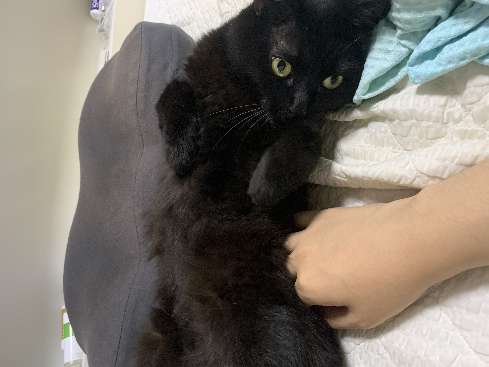

인생 영화 - 이웃집 토토로
미야자키 하야오 특유의 섬세한 작화로, 아이들의 순수함과 그 일상을 따뜻하게 그려낸 영화입니다.
불안하고 여린 자매의 마음을 포근하게 감싸주는 토토로는, 이 영화가 시대를 넘어서도 사랑받도록 만들어 주었습니다.
가독성 좋은 코드를 찾아 헤매는 백엔드 개발자입니다.
안녕하세요! 저는 웹 개발을 배우고 있는 학습자입니다. 매일 조금씩 성장하는 것을 목표로 GitHub에서 코드를 관리하고, 블로그에 학습 내용을 정리하고 있습니다. 꾸준함이 가장 큰 무기라고 생각하며, 오늘 배운 것을 기록하는 이 TIL 페이지를 통해 성장 과정을 남기고자 합니다.
| 이름 | 김준 |
|---|---|
| MBTI | ISTP |
| 취미 | 웨이트 트레이닝, 게임 |
| 좋아하는 음식 | 치킨, 닭가슴살 |









미야자키 하야오 특유의 섬세한 작화로, 아이들의 순수함과 그 일상을 따뜻하게 그려낸 영화입니다.
불안하고 여린 자매의 마음을 포근하게 감싸주는 토토로는, 이 영화가 시대를 넘어서도 사랑받도록 만들어 주었습니다.

"고객에게 매일 가치를 전하라."
당신의 조직은, 이해관계자들과 함께 자라고 있나요?
애자일을 '어떻게' 하는지는 알고 있지만 '왜' 하는지를 모른다면 이 책을 읽을 차례입니다.
오늘 새롭게 배운 것들을 기록합니다.
header, nav, main, section, article, footer 등 시멘틱 태그의 역할과 사용법을 배웠다. 웹 문서의 구조를 의미 있게 구성하면 접근성과 SEO에 도움이 된다.
리소스를 불러올 때 상대 경로(./images/photo.jpg)와 절대 경로의 차이를 배웠다. 프로젝트 이식성을 위해 상대 경로 사용을 권장한다.